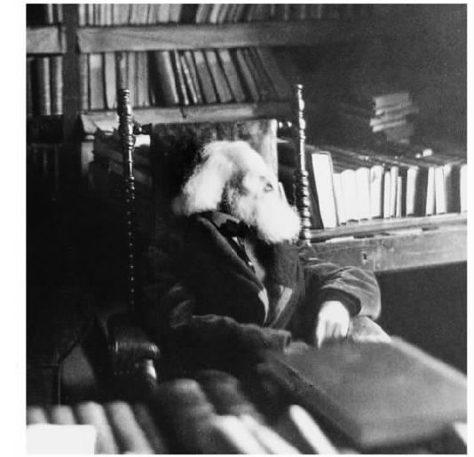
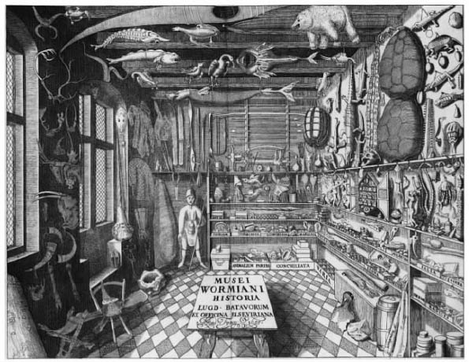
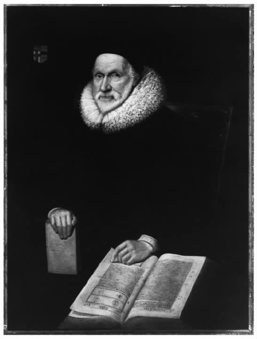
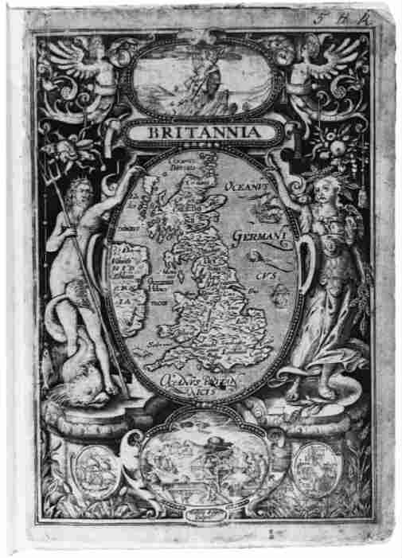
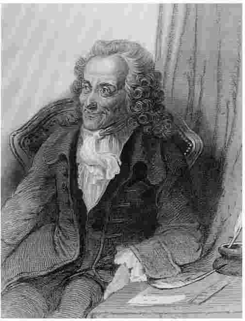
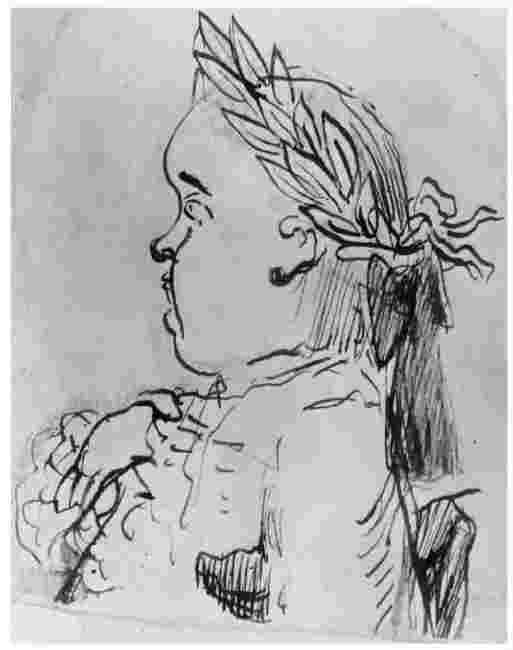

1885年，九十岁的利奥波德·冯·兰克 [1] 坐在他柏林的书房里，创作自己最后的历史著作。他已经无法阅读，记忆力衰退了，写字也很困难。通过向忠实的助手口述自己的话，他对自己作为一名历史学家的一生做了简单的描述。他讲到自己还是一个年轻人时怎样开始对历史感兴趣：他的大学讲师、他的哲学阅读以及他从沃尔特·司各特爵士 [2] 的历史小说中得到的乐趣。关于最后一个主题，他说道：

图9 年长的学者和创始人利奥波德·冯·兰克
兰克经常被称为现代历史编纂之父。他论述这份虚构的遗产目的在于呼吁人们关注“证据”，要求历史学家能够也应该写出“科学的”和“客观的”历史——如果他们坚持不懈地回到文献档案中去的话。他的历史哲学被浓缩在一句广为引用的名言中：“仅仅说出事实是怎样的。”
在这一章里，我们将不仅把兰克当作我们的起点，而且把他当作我们的目标。有充分的理由（如我们即将看到的那样）对兰克“现代历史编纂之父”的资格提出质疑。也有充分的理由（如我即将论述的那样）想要逃避他仍然具有的某些父亲般的影响。可是，兰克——一位回忆和重新想象着自己显赫一生的老人，始终追求有证据支持的真相——成了一个有用的界标。他对“客观”历史的信仰，使他与我们在上一章遇到的作者们相比，无疑显得更加“现代”。为了实现这篇简短叙述的目标，我们将把兰克作为现代历史编纂的开端，并在以下的主题章节中阐明兰克之后的历史思想。
接下来，本章将要叙述16世纪到20世纪之间历史编纂的某些发展。这是一个复杂的故事。我们将遇到许多也许不会把自己看作“历史学家”的学者，但他们仍为我们今天所称的“历史”贡献了特定的要素。所以，为了简化任务，让我们采用某些特定主题作为堆石界标来指引我们的路线：真相的问题，如何利用历史文献的问题，以及过去与现在之间的“区别”问题。在随后的章节里我们可以更深入地探讨其中的每一个主题。至于现在，它们将为我们的路线做上标记。
上一章的结尾处提到，“历史”在16世纪遭到了怀疑主义者（“皮浪 [5] 主义者”）的围攻，他们认为历史是不准确的和无用的。他们所谴责的“历史”大部分是运用了修辞技巧 的历史，这种历史由文学创作的古典准则所引导，由既要提供精练的叙述，又要从过去的政治事件中提出惩戒性“教训”的双重期望所驱动。让·博丹为历史所做的辩护是哲学性的和理论性的。但还有另一些历史的捍卫者采用了很不相同的路线，他们的方法和目标在很多方面预示了兰克对文献准确性的渴望。
捍卫历史“真相”的最初驱动力（就像在早期基督教时代一样）来自宗教冲突。这一点看起来可能有些奇怪，从最无所不在的偏见——信仰中发展出了用于获取客观真相的手段。但是在审视16和17世纪的时候，我们看到了这样的文化，它们认为事实“真相”与宗教“真相”被捆绑在一个无法逃避的统一体中。问题不仅在于关于过去的真相，而且在于关于上帝的真相。
新教和天主教都用历史来支持它们相互对立的对于权威性的诉求。在新教一方，历史被当作特殊的派别武器，用来证明它的信条具有更长的历史，或者用来贬损罗马教会。天主教拥有更可靠的过去，对历史的处理方式也更具建设性，它试图回到自己的过去去寻找合法性证据来进一步巩固其信仰。双方作者都把文献作为证据的一个来源。例如，新教学者弗拉西乌斯·伊利里库斯 [6] 在16世纪中期召集了一队工作人员。他们复制和校订中世纪的文献，作为罗马天主教长期“腐败”的证据，并声称“新教徒”早在路德之前就已经存在了（恰好还包括我们在第一章里见到的中世纪异教徒）。在天主教这一方，17世纪中期许多被称为博兰德会 [7] 修士和莫尔会 [8] 修士的教会学者编纂了教会史和殉教史，譬如纪念碑式的《圣徒行传》 [9] 。这些学者和与其类似的其他学者，大量地使用了文献证据。然而，他们的方法相对比较简单：关键就是大量搜集可用于防御敌人攻击的证据。
更复杂的是分析古文物学家提供的文献。如今“古文物学家”这个术语往往带有贬义，指幼稚无知、不通世故、迷恋过去的人。早期的人们有时也持这种负面观点。1628年，一个叫约翰·厄尔 [10] 的人（也许是开玩笑）将古文物学家刻画为这样的人：“对旧时代有着不自然的病态迷恋，满脸皱纹，（像荷兰人喜欢奶酪一样）热爱一切陈腐不堪、被虫咬坏的东西”。古文物学家热爱过去。这里“古文物学家”与“历史学家”之间有着重要的区别。我们不应该想象这两个词语描述的是相互分离的学者群体；实际上这些人相互通信，认为他们从事着共同的行业。尽管如此，但是概而言之，“历史学家”从宏大而有教益的西塞罗式的故事当中吸取灵感，撰写范围广阔、引人入胜的历史。与之相反，古文物学家则收集一切能够找到的、与过去任何时期有关的、他们所喜好的事物。他们没有什么重要的故事要讲，只有强烈的热爱要表达。

图10 “……陈腐不堪、被虫咬坏”——奥雷·沃姆笔下的古文物学家的古董橱柜（1655）
但正是专攻许多不同领域的古文物学家，创造出了经由保留下来的文献和资料研究过去的手段。这时我们的第二个主题出现了：对文献的使用。最初的变化灵感仍然来自宗教。1439年，洛伦佐·瓦拉 [11] （1406－1457）针对也许是基督诞生以来一千四百年间最著名的文献，撰写了一篇也许是最著名的文献分析。这份文献就是《康斯坦丁赠礼》，它旨在记录4世纪时叫这个名字的罗马皇帝赠与基督教会的礼物和权利。在整个中世纪，《赠礼》是教会宝库中最有效的一件武器。瓦拉证明它是一件伪造品。
至少从12世纪开始，就有其他人对《赠礼》提出怀疑。但是瓦拉（应该注意到，他的动机来自破坏 教皇制度的真诚愿望）以新的方式表达了自己的批评。他聚焦于这份文献的语言 。通过分析它所使用的拉丁文风格和所提供的细节，他以雄辩的华丽辞藻断言，这是一份中世纪的赝品：
瓦拉是一个“文献学家”，一个研究语言的学者，他注意到《赠礼》的拉丁文根本不像4世纪的“古典”拉丁语，而它声称是来自那个时候的。瓦拉将这份文献中的拉丁文描述为“野蛮的”拉丁文，因为他像大多数文艺复兴时期的学者一样，认为从古典晚期到自己时代之间的一切事物都代表了知识和优雅风度的衰退。因此，瓦拉受到了两种偏见的影响：宗教和语言的纯洁。但是将文献学运用于历史文献，就提供了两种探究过去的新思想。首先，人们可以根据其内部特征来鉴定一份文献，从而形成某种标准来判断历史记录中的什么是“真相”。其次，语言（因而还有文化）在不同的历史时期里是变化的 ；随着时间流逝而变动的不仅是统治精英的命运，还有人们谈话和生活的方式。
这超出了对罗马教会的抨击，它涉及我们的第三个主题，即过去如何不同于现在。瓦拉认为语言对于塑造社会是至为重要的。他所理解的罗马“帝国”就是任何讲拉丁语的地方，因为彰显罗马独特性的基本要素，是与他们所说的语言和他们理解世界的方式缠绕在一起的。这样，瓦拉不仅为严肃的文献分析之路树立了一块里程碑，而且把语言和文化研究再次引入了历史。历史包含比政治“事件”更多的内容，这一观念第一次逃离了修昔底德的政治史之塔。
这些观念及其寓意并不完全出自瓦拉，也没有直接引起历史实践的革命。瓦拉不是一位“历史学家”，发展这些主题的那些人也不是。他们毋宁说是研究拉丁语之演变的文献学家、试图净化罗马法的学者、用古钱币重建新的古代图景的古钱币学家，以及想要收集与特定地理区域的历史有关的一切细节的地志学家。约翰·迪伊 [12] （1527－1608）将地志学定义为这样的一种实践：描述“地面上的版图或区域”，其中“略去了……地面上能够见到的不重要或奇怪的事物。有时也描述地下的事物，对金属矿藏、煤矿矿井、采石矿场之类做上某种特殊的记号或警示”。或许这不是最好的说明，但当时迪伊在从事地志学之外还是一位巫术占星家，人们相信他还参加了女王伊丽莎白一世的特勤组织。如果他趋向神秘，我们不必感到惊讶。

图11 古文物学家威廉·卡姆登
在16世纪晚期和17世纪，这些古文物学家的追求在整个欧洲越来越流行，因为文献学家、古钱币学家和地志学家共同分享着对“陈腐不堪、被虫咬坏”之物的热情。甚至在19世纪，业余学者们还会追忆这些古文物学家，称他们是自己的先驱。如今历史学家使用的许多文献汇编，都是这些维多利亚时代团体的产物：比如卡姆登学会、剑桥古文物学会和达格代尔学会。卡姆登学会得名于英国最著名的古文物学家威廉·卡姆登（1551－1623）。他的巨著《大不列颠》写于16世纪末，旨在从现存证据中重建在罗马统治下不列颠的每一个已知细节。卡姆登及其仿效者的目标，没有受到西塞罗修辞式撰史模式的影响。他试图拼凑一幅图画，而不是讲述一个故事。不过卡姆登对历史证据 的贡献，无论是文字的还是物质的，后来都被彻底融入了历史编纂之中，以致现代历史学家常常忘记自己受了谁的恩惠。
古文物学家给了我们调查文献证据的工具。“皮浪主义者”对历史的挑战指向历史记述不准确的地方，主张人们应该因此抛开对这种文献的信任。古文物学家的反应——尤其是当它慢慢被历史学家所采用的时候——为鉴定过去的记述是否准确提供了方法，但它也暗示，细致的分析能让研究过去时代的学者从胡言乱语中筛选出真相。弗朗索瓦·博杜安 [13] （1520－1573）是一位想要弄清罗马法律（进而想弄清其统治体制）从过去到当代如何演变的学者。他看到了将历史研究与法学相结合的可能性，试图“清除历史中的神话”。博杜安提出，一个历史学家应该像一名律师 那样：在相互冲突的记述之间进行取舍，力图建立事件发生的准确顺序，以冷静、客观的怀疑态度对待“证物”（文献）。这听起来也许非常熟悉；我在学校里就被教导（或许是因为它听起来令人激动），历史学家就像是一位调查犯罪行为的侦探。律师就是博杜安时代的“侦探”。

图12 不列颠地图，摘自卡姆登的《大不列颠》（1607年版）
我们不能完全相信这种“客观性”的断言。有些历史学家是受宗教战争所激励的，例如雅克——奥古斯特·德·图 [14] （1553－1617），他写于17世纪初的著作试图（虽然并不成功）提供一种“诚实的”欧洲史记述——它可以缓解宗教冲突，使法国走向稳定。另一些历史学家，例如让·杜·蒂耶（卒于1570年），是在一种民族主义的驱动下从事档案研究的：从历史的和文献学的角度确定德国人是法国人的祖先（这样德国人就会作为最古老的民族而受到崇拜）。所以这些人的目的性都很明确，但他们的确创造了为我们所继承的新方法和新工具。他们在档案中与原始资料为伍。他们在对事件的后来记述和“证物”提供的证据之间看到了差别。他们承认所有历史时代都是不同的，通过分析人们所使用的语言，可以着手探究他们表达自己对周围世界的看法的不同方式。他们试图修正错误，弄“清楚”。例如，德·图给全欧洲的学者写信，出示自己著作的草稿，希望他们能指出不准确的地方，填补遗漏的细节，验证某些材料为真或为假。到文艺复兴时期，历史已成为某种创作。文艺复兴之后，有了工作和研究方法，历史就更是如此 了。
这里所勾勒的变化也许暗示着，第二章里提到的历史学家是在创造“真实的故事 ”，而本章的历史学家则以“真实的 故事”为目标。正是从瓦拉到博杜安的时期，形成了使用资料的方法和原则，力图确定历史“真相”可以通过证据来证明。这些变化的结果之一是形成了关于过去如何不同于现在的更微妙的看法。不过我们必须注意到，16和17世纪之后，古文物学不再兴盛，对“真相”的强调并未得到普遍的支持。但是，如果我们想象历史学家总是在“真相”和“讲故事”的两极之间来回摆动的话，我们将会更好地理解当前复杂且纠缠不清的记述线索。
当我们进入18世纪，一个总是与通常所称的“启蒙运动”联系在一起的世纪，历史的“真实故事”与哲学问题发生了关联。历史的这个新目的影响了历史学家对过去时代和历史文献的看法。伏尔泰 [15] （1694－1778）评论道：
伏尔泰对历史细节的明确排斥，也许会让我们怀疑启蒙运动中的学者恢复了皮浪主义者对历史的拒绝态度。对启蒙运动的这种看法在19世纪的确很流行，那时的历史学家想把自己描述成前辈们的反对者。但事实上，我们在18世纪拥有的是一种非常不同的驱动力，一种让历史与启蒙思想家所关心的主题（理性、自然和人类）产生关联的 愿望。诸如伏尔泰、休谟 [16] 、维柯 [17] 、孔多塞 [18] 等作者，是在利用对过去的研究来探讨“大”问题——有关人类存在的性质和周围世界的运行。他们的兴趣为再次逃离修昔底德之塔提供了可能。正如自然科学中的新现象正在进入科学家的视野，对于通晓哲学的历史学家来说，仅仅涉及事实积累和政治事件是不够的。世界——无论是现在还是过去——首先是复杂多样 的。启蒙运动中的历史学家不仅对统治精英的决定感兴趣，而且对地理、气候、经济、社会结构和不同人们的性格感兴趣。如果科学家能够指出自然世界中让人难以置信的相互联系的话，历史学家也应该尝试以类似的复杂方式去理解过去。

图13 伏尔泰，历史学家、作家、哲学家、剧作家和重要的启蒙学者
讨论启蒙运动期间的“一种”历史观念是很困难的：如同任何其他的知识领域一样，18世纪的特征与其说是某种单一的思想模式，不如说是它的多样性和对于辩论的热衷。（莱昂内尔·高斯曼 [19] 曾有用地提出，在讨论“启蒙运动”的时候，我们想象它是一种“语言”或共同的言语模式，而不是任何一套广为采纳的原则。）尽管如此，我们或许能够挑选出一些重要的主题，因为它们与历史编纂的演变和对过去的看法有关。
首先是过去本身：它并非如此简单。植物学和地质学的发展使各种各样的思想家得出结论：世界要比《旧约》所承认的古老得多。如果《圣经》对六天造物的记述是“真实的”，那也不可能是在实际意义上，而是在象征意义上。时间本身的延伸——虽然极具争议——必然会挑战过去的假设。上帝在历史上扮演的角色不得不重新确定。对某些作者来说，完全可以将上帝忽略不计。另一些人则把上帝的旨意想象为“神圣的天意”：巧妙地指引着人类的历史进程并充当其终极的原因。“天意”并未引起所有历史学家的兴趣，而且可能会导致某些奇怪的假设。18世纪中叶的德国历史学家指出，相信这是“天意”，往往会促使某些作者（比如天赋平平但阅读极广的约翰·许贝纳）接受似乎能说明上帝存在的任何 历史传说。例如，许贝纳在他的美因茨史中写入了“老鼠塔”的故事。在这个故事里，美因茨大主教哈托将许多乞丐活活烧死，并喊叫着“听！听我的老鼠们尖叫！”结果他遭到大群好斗老鼠的袭扰，虽然逃到莱茵河中游的一座塔里避难，最终还是被追捕者吃掉了。许贝纳坚持认为这段记述具有事实上的准确性，其理由是在莱茵河中游的确有一座“老鼠塔”，这个故事非常古老、广为人知，就像《圣经》里关于青蛙或蝗虫灾害的故事一样有根有据，而且（他声称）823年的波兰发生过类似的事件！
幸运的是，并非所有历史学家都认为这种关于真相的方法论是完全可以接受的。
可是，如果“天意”被抛弃的话，历史学家仍然需要一种因果关系理论。两种相互竞争的模式出现在他们面前：偶然性和伟人。前一理论用这种观念玩哲学游戏：任何伟大的事件都不是计划好的或有意图的。伏尔泰在其《一个婆罗门和一个耶稣会士之间的对话》中，将亨利四世遇刺的原因归结为那个婆罗门出门散步时先迈的是右脚而不是左脚。对那些坚持“伟人”理论的人来说，事件发生是因为非凡的个人促使它们发生。来自第二阵营的一个极端例子（而且完全没有伏尔泰式的顽皮幽默）是约翰·费希特 [20] （1762－1814）对亚历山大大帝的评论：
这对孪生信念——“理性”是一种抽象的、超越历史现象的压倒性力量，以及，天才个人为自己的哲学使命所煎熬——为现代听众拨动了令人恐惧的琴弦。
启蒙运动还提出了另一个信念：人性具有永恒的普遍性。大卫·休谟（1711－1776）写道：“所有时代和所有地方的人是完全一样的，历史在这一点上没有说出任何新鲜的或奇特的事情。它的主要用途不过是发现永恒而普遍的人性准则。”中世纪历史学家倾向于假设过去和现在一样，但是休谟所表达的却略有不同：不是对超越历史的相似性的“假设”，而是（如他所见）对它们的发现 。在这里历史受到了自然科学逻辑的影响，后者相信世界在本质上是静态的，受到规则的支配，而这些规则能通过仔细探究来加以理解。休谟相信历史研究与之相似，能够揭示构成“人性”的那些基本要素。
探寻主题带我们回到古文物学家的遗产。在许多方面，17世纪的古文物学——它强调文献的细节和不同时期间的历史差异——与早期启蒙运动中更宏大的哲学式历史之间存在着张力。但是18世纪也经历了这两种要素的结合，将它们融入了某种更类似于我们今天所知的历史。一个伟大的例证是爱德华·吉本 [21] （1737－1794）的著作。《罗马帝国衰亡史》篇幅长达一百五十万个词，涵盖了从古罗马到中世纪晚期的欧洲历史，与我们上面所提到的其他历史著作都不相同。它的主题并不新颖，虽然吉本分析一种文明衰落过程的尝试在此前或许还没有人做过。它的方法也不新颖，因为在这里吉本显然得益于古文物学家的技巧。其与众不同之处在于：今天它仍在被阅读。

图14 爱德华·吉本（据说是黛安娜·博克拉克夫人所作）
好了，这是一种稍有些狡黠的说法。有些更古老的历史学家也在被阅读，尤其是古希腊的历史学家。吉本仍被阅读，却不再那么被信任。但是《衰亡史》提供的是这样一种历史（这就是为什么书社仍在刊印其各种版本）：将西塞罗式的叙述风格、启蒙哲学的探究方法，和古文物学的资料分析熔为一炉，取得了令人满意的效果。这不是说吉本在其中任何一个领域都很出色：他从未去过档案馆，而是依赖已经出版的文献汇集；他的写作风格很优雅，但间或有些傲慢；《衰亡史》最大的问题在于，吉本从未准确地告诉我们罗马为什么衰落，或者一种文明的“衰落”究竟是指什么。尽管如此，吉本仍是——如果不是第一位的话——专职历史学家 最典型的范例。他不是哲学家、编年史作者，也不是地志学家或古文物学家，而是一位历史学家。
我说过吉本没有“解释”罗马的衰落。更公平的说法或许是，他的解释不是基于抽象的分析，而是基于累积的叙述。与其赞同某种因果关系模式，比如说偶然性，吉本更打算说明历史因果关系的复杂性和异质元素之间无穷的互动关系。在《衰亡史》中，这种对于复杂性的信念并非明言的理论，而是潜在的逻辑，然而，18世纪末和19世纪初的历史学家——尤其是在德国——开始发展这样的理论。他们对“偶然性”的解释感到不满，面对复杂性它就立刻投降了；他们也不相信那些坚持“伟人”观念的人的哲学和政治。如苏格兰作家托马斯·卡莱尔 [22] （1795－1881）后来所说：
特别是从德国启蒙运动后期阶段开始，历史学家越来越相信，恰当地理解历史要做两件相互联系的事情：首先，非常详细地研究档案资料；其次，形成因果关系理论，来将地理位置、社会体系、经济力量、文化观念、技术进步的影响与个人意志之间的复杂关系融合起来。历史正在从政治学和法学转向经济学和我们今天所称的社会学。在这种冲击中，人们会认为修昔底德之塔的确已经变成了废墟。
现在我们要回到兰克，他对历史虚构性的排斥是本章的起点。如他在整个职业生涯中所充分表明的，兰克（1795－1886）把自己视为历史技艺的革新者和救助者。他对文献研究和客观历史分析的倡导被许多人（包括他自己）称为是革命性的和激进的，最终将历史牢固地置于“科学的”立足点上。然而，正如我们所见，这一洞见中的许多部分早在兰克时代之前就已经出现了。那么，难道他只是一个伟大的冒牌者吗？
尽管兰克的形象在某种程度上——或许是很大程度上——可以理解为是自我推销，但关于启蒙时期的历史编纂和兰克认为自己所反对的东西，仍有一些值得注意的地方。18世纪许多最著名的作家创作出“哲学式的”历史，它们与事实本身无涉，而与他们要阐明的关于人类和生存的某些重大问题有关。另一些历史学家也从残存的西塞罗式的历史中汲取灵感，为读者大众（这个群体在18世纪得到了极大的发展）创作出用文字写就的美丽故事。所有这些都是由启蒙运动的统一特征促成的：相信自己生活在一个理性达到顶点的时代，在知识、理解力和判断力方面都胜过和超越了以前的任何时代。启蒙运动中的历史学家在骨子里是知识上的势利眼。他们以更多或更少的谨慎调查过去，但首先对过去做出判断。对大多数人来说，过去没有达到他们的高度期望。如一位作家所说：“为了哀悼‘美好的旧时光’，人们不能知道它们是什么模样。”
兰克在暗示着不同的东西。他要对文献进行详细的分析，不让富于幻想的灵感“歪曲”结果，服从审查和验证的“科学”观念，从而能够“仅仅说出事实是怎样的”。历史学家是枯燥记录的详细调查者，是准确问题的冷静而冷酷的分析家，是客观真相的公正而严厉的仲裁者，这样的形象 至今还留在我们心中（尽管令人欣慰地加入了另一些不那么干瘪的形象）。兰克的研究方法不是唯一的：法国历史学家朱尔·米什莱 [25] （1798－1874）也从档案中汲取灵感，但他的历史著作浪漫而且热情洋溢，迷恋于怪异的人物和边缘群体，譬如女巫和异教徒。米什莱并不总是很准确，但他的才能和想象为后来的历史学家提供了一种可选择的灵感模式。
无论如何，兰克的实情与他的形象略有些不同。他确实使用档案资料——虽然在他之前其他人已经在这样做了，实际上他著作中百分之九十以上的参考文献都是过去学者研究过、出版过的文献。和之前的其他人一样，他的客观性目标部分是达成的，部分是未达成的。那么他改变了什么呢？或许在于两点。
首先，如果吉本如我所说标志着历史作为一种使命（人们因为历史本身而选择去研究历史）的开端，那么兰克则确立了一种作为职业 的历史。兰克留下的一大遗产是历史学家的工作研讨班，在那里，年轻学生聚集在一位功成名就的学者周围，通过直接研读原始资料来学习技艺。在教育经费许可的情况下，这种模式仍在指引大多数年轻的历史学家熟悉这个行当。
其次是一再出现的格言：“仅仅说出事实是怎样的”。这个短小而平淡的句子激发了关于历史实践和历史哲学的许多论著。它是历史学家（不仅仅是兰克）逃离“真实故事”的范式，砍掉第二个带有虚构意味的术语，让历史仅与“真实”相关的一种尝试。我们将在下一章进一步讨论这种观点。现在让我们注意一件事情。兰克说“仅仅说出事实是怎样的”，他其实是在引用一位更古老的历史学家：修昔底德。这是兰克的忠实所在。无论兰克为历史提供了什么别的东西，他又一次回到了政治事件之塔。他的资料是关于统治者、国家、民族和战争的资料。我们再次逃开，却陷入了分裂，因为反对兰克的看法又会将历史编纂分解为完全不同的部分。如今很少有历史学家简单地称自己为“历史学家”：我们是“社会史学家”、“文化史学家”、“女性史学家”、“科学史学家”或者真正的“政治史学家”。这是本书以下内容不打算接着叙述历史编纂发展的原因之一：内容实在太多，不同的分支也太多。作为替代，下一章我们将通过考察特定的主题和问题，更多地探讨20世纪的历史编纂。
当然，认为历史编纂的发展“终止”于19世纪中期是可笑的。我以兰克作为终点，部分原因仅仅在于，我没有能力将自此以后历史编纂所采用的无数方法构成一个连贯的叙述。但是这种看法也有些道理。自兰克之后，任何类型的历史学家心中最初的、首要的观念就是“真相”，它可以通过忠实于资料而着手进行探究或最终企及。自19世纪以来，历史声称自己既有实用性又有功利性，这往往是基于认真利用证据，而不是修辞的优雅或哲学的敏锐。
19和20世纪历史学日益制度化，推进了这一进程。历史只是工业革命后逐步“职业化”的大量学科中的一个；实际上，它被确立为大学研究的一个严肃主题，确实比其他某些人文领域更晚。19世纪晚期，历史学家开始建立职业团体（譬如美国历史学会），创办学术刊物。整个20世纪，越来越多的历史学家为博士头衔而学习，在大学院系里工作，并坚持“专业人员”的权威地位。上世纪末历史之所以能职业化，部分原因在于，现代国家维持一个知识分子阶层的经济能力增强了。随之而来的结果之一是出现了历史应该服务于民族国家需要、创作“民族”历史的期望。这在某种程度上限定了不同国家的早期职业历史学家所提历史问题的类型：英国自视为议会民主的顶峰，并为自己的帝国而骄傲；法国人将1789年革命视为现代国家创建的开端；德国人颂扬其文化和种族的“优越性”；美国假定与欧洲模式间存在“不同”，并为此自豪。历史学的职业化并未将历史学家从其独特文化的需要和偏见中解救出来；如果要说真的有影响的话，那就是这种需要和偏见得到了强化。
既然我得益于这个职业体系，对它发出任何过多的悲叹都会显得很无礼。但是值得注意的是，历史学家为职业地位付出了某些代价。首先，在一般读者大众与专业历史学家之间存在着越来越多的隔阂：一般说来，为学术期刊撰文或者在大学出版社出版专著，意味着为不超过五百人的读者群而写作。对于每一个 读者来说，许多有趣的、重要的内容被隐藏在了令人不快的大片专业注释当中。其次，成为“专业人员”有时会让历史学家假装超然于现在和过去，并对其做出客观的判断。我们将进一步探讨这些主题，但这里只需注意，“专业的”并不意味着“公正的”，它主要表示“有报酬的”。现在历史学家要靠他们所做的事情谋生，这意味着要应对大学委员会、基金理事会以及要求同行评审的出版人的期望。历史学家和大多数人一样在既定的利益网络中发挥作用。最后，职业化还会导致分裂。很少有历史学家认为自己是一个广阔领域的专家，他们往往以特定的方式从事专门的研究。我不能确定这些分裂是“坏事情”；它们也许是不可避免的，甚至可能是建设性的。但是对我们来说，它们的确意味着“历史”（无论是就历史学家的工作，还是就他们对过去所做的描述而言）绝不能只是一个 真实的故事。
这一章围绕资料的使用、过去与现在之间的关系、历史记述中的“真相”，考察了相关观念的发展。我试图表明这些问题具有悠久的历史，对它们的回答也多种多样。如果事物在过去是不同的，那么在将来也会发生变化：辩论尚未结束。本书后文将进一步探讨“真相”以及我们与过去间的关系。不过下一章我们会更深入地关注资料，以及历史学家能用它们做些什么。